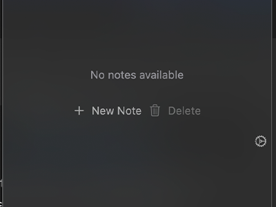

Discover DropNote Features

Create Notes
Quickly create, edit, and manage up to 5 separate notes with an intuitive interface.

Tabbed Interface
Switch between your notes effortlessly with a sleek, modern tabbed design.

Dock Integration
Keep DropNote accessible at all times with smart integration into your macOS Dock.
Sync Support Soon
Automatically sync your notes across all your devices.
Customizable Themes Soon
Personalize your note-taking experience with various themes.
Quick Search Soon
Effortlessly search through your notes with lightning speed.